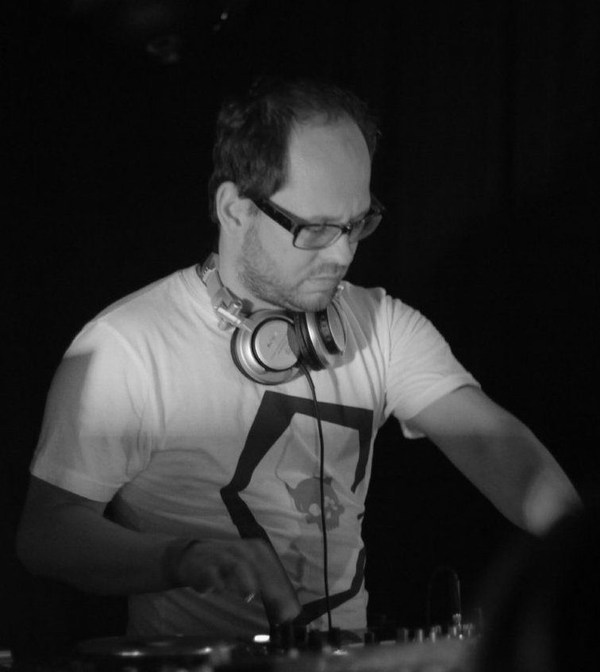
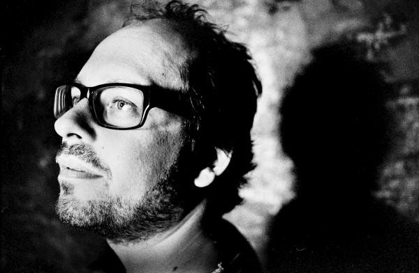

Oliver Huntemann: Fünf Jahre in das Geschäft der Techno



“Fünf Jahre in das Geschäft der Techno” translates from German into “Five years in the business of techno,” which is the amount of time Hamburg stalwart Oliver Huntemann has been running his Ideal Audio label. His history though in electronic music obviously stretches back much further than that: to the late 80s, when the scene was in its infancy, with all of the euphoric sense of freshness and freedom that goes with it.
The biggest change Huntemann says he’s seen develop in the industry in the decades since is the increasing professionalism; refreshingly though, and in tune with the friendly and affable personality he projects, he’s incredibly positive about these changes. As an industry lifer, he has plenty of measured observations about dance music in 2014. Rather than seeing the business side as detracting from his passion for electronic music, he says it’s something that compliments it.
“There’s always been a passion inside me for this kind of music,” Huntemann told Data Transmission late last year. “I’ve always been into electronic music, starting out when I was a little boy, and I was always into this feeling. But on the other side, I grew up, and I like the business part as well now. It’s very interesting, and it is my job; I have to see it from a different point of view from only being passionate. Bringing this together is what is so interesting; but in the end it’s about the music, having a good time and having a good party”.
Huntemann’s vision for Ideal Audio has established the imprint as a quality home for richly produced big-room techno, with a heavy focus on functional dancefloor groove. Five years down the track, and the label’s anniversary is being commemorated by Oliver Huntemann presents 5unf - Five Years Ideal Audio, which collates the imprint’s classic tracks, plus 12 brand new cuts across two discs. Released in the final weeks of 2013, Huntemann is traversing making his way around Europe on a tour in support of the release. Data Transmission finds out more.
So you’ve been travelling around on the tour in support of the compilation?
I’ve been on tour over the weekends, but in the wintertime not so much during the week; the weeknight gigs always happen during the summertime. So my week is very quiet, and I’m preparing some stuff for next year, and then I’m going to Barcelona on Saturday. So not too much travel.
When you’ve worked on a compilation for so long, it must be gratifying to see it come together, to go on tour and be taking it out to an international audience?
Yes of course. I’m so happy having this job, because I love to travel. And it’s not so boring, so I can do the label stuff in the office, and then on the weekend I go off anywhere in the world. It’s the same with the studio, because if I would only do one thing, sitting in the studio every day, for every week of the whole year, it would be too boring. So the way that it comes together is perfect for me. The most power that I get is still from the touring – I’ve been doing it for 20 years, and I still love it. But having all these opportunities is when it comes together; it’s what gives the full power to me. Touring by itself would be too heavy, but bringing the experience and the vibe from the weekend into the studio, and then to the label, that’s a 360 degrees perfect balance thing.
Your history goes all the way back to the late 80s, a time when things were very fresh; you’ve said you’ve seen an increasing level of professionalism in the scene since then. Over the past few years it seems there’s more money than ever in dance music. What are the changes you’ve seen on your end?
I don’t know if there’s more money than ever. If I remember back to the 90s there were these British superstar DJs who earned so much money, and from Germany it seemed so far away. I don’t know why, but the guys from England made it big then for some reason, and there were huge amounts of money, the sales of the records were huge. Nowadays, music seems to be free for everyone. I don’t like this ‘music for free’ mentality… so the money went to another place, these super huge DJ fees. In the meantime DJs have become like popstars, an artist like Deadmau5 is playing alongside the Red Hot Chilli Peppers. But we all belong together in the end, whether it’s commercial or underground. I think they remember where they come from, and the same for us. Without this commercial stuff, much of the underground stuff wouldn’t live.
Do you feel your motivations of what you’re doing with the label have changed at all since you began give years ago?
Not really. I’m always working on not only having the focus just on me, on my person. It’s my imprint and I like to release all my stuff on Ideal of course, but from the beginning I’ve tried to bring in new artists as well, and to support young artists. That’s what I want to do in the future more and more. That’s not so easy, because it’s difficult to get good artists. But at the moment, I have some really strong new guys in the background working on stuff. So the combination of my ‘old’ producer colleagues like André Winter and Extrawelt, and the new ones like Soel, Jonni Darko and Joran Van Pol for example. So it’s so cool bringing this together. I’m happy having all these old and new artists on the label, I think that makes for a great combination.

When did the compilation start coming together?
I started quite early, because 2013 was already the five years anniversary of the label, and we started talking about it in November last year. Then we had some problems inside the label with the structure, but after that I’d already started in March with putting it together; asking the artists to do exclusive tracks, which always takes time. We had the release last week [in December], so you can imagine how long it takes sometimes. And then with the graphic design for the artwork, and the promotion, all of that belongs to making a good release.
When the tracks started coming together, was there anything about them that was consistent across them, a certain energy or trend?
I don’t really look for trends. It’s so funny, I try to follow my path; but always looking forward and not back. I like to hear new influences, which is not easy after 20 years, but I don’t follow the trends so much. I look at them, but I don’t want to follow, because I want to make my own style. If I look back, around seven or eight years ago there was this electro trend, and all the parties were electro parties, and two years later there was minimal. So trends are coming and going, and they are what keeps the whole scene alive, but it’s not all about the trends. The most difficult thing is being there all the time. If you work on something for all of the time, and you’re there for the whole time, and not having these super highs or super lows, being consistent, that’s the most difficult thing. But it’s what I try to do.
Even if you don’t want to follow trends, you want to keep pushing the sound forward.
Absolutely. So I don’t say, I stuck with my 90s stuff or whenever I was successful. I’m always looking for something new. But you never know, what is the next trend? Nobody knows this. The new trend is deep house, or maybe that’s over again already [laughs]. So that happens. I’m looking always for new stuff, and that’s the most interesting thing about electronic music in general. People are mostly looking forward trying to find something new, and not stuck in something back in the days.
I really enjoyed High Funf in particular, because it’s a very focussed dancefloor record. Were you trying to make a record something that packed a punch?
I always have a vision in my head of what I want to do, a vibe. And it’s always a bit different every time. Sometimes it can be a bit more stripped down, and sometimes a bit harder. I think I can combine it with my kind of darkness, some sounds that I usually use. Sometimes it’s tougher, and sometimes it needs to be a bit more relaxed. And often when I produce something in the studio, it feels to me totally different in the club. Which is strange after all these years, it surprises me too. I want to have variety, but it should always work on the dancefloor, for me. So when I play a DJ set, all my tracks should fit in a way in my set. That’s important to me, I don’t need to be a super artist who has to prove himself that he can do jazz music or whatever.
Functional is a word.
Yeah I like it. Because I’m a DJ, that’s what I stay for, and I still like it. So that’s my way. Keeping it simple, without being stupid [laughs]. That’s something that I like to do.
So what’s planned for you and the label in the next couple of months?
2014 is here already, and I want to record a new mix CD. The last ones took part in Sao Paulo, Paris, New York and Melbourne, and I think I’ll continue this. It’ll be a live mix, one of my DJ sets. I don’t know yet where I’ll do it, but it’ll be a live recording with the audience. I will continue this in the first half of the year, and parallel I will start working on a new album. I didn’t feel it this year, but I think it’s time, next year to start a new album. I don’t have a plan yet, but it grows at the moment.
Is it starting to form in your head, what sort of shape the album will take?
Not so particularly. I always know when it’s time to create an album, and not doing singles only, because it’s a different way to produce. An album tells a different story. So that needs some time, and I need to have only this complete feeling inside. I’m not thinking, I have this track in my mind, and this one, and this one could look like this. That comes later during the production time [laughs]. It’s as simple as that.
Oliver Huntemann presents 5ÜNF – Five Years Ideal Audio is out now CD & Digital via IDEAL AUDIO